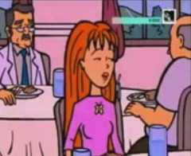

Daria (Serie)
 De: La Frikipedia, la enciclopedia extremadamente seria.
De: La Frikipedia, la enciclopedia extremadamente seria.
De la serie Programas de TV:
El que parezca emo no quiere decir que lo sea. Y Jane definitivamente se ve bien.
| Idioma original:
|
Gringo y doblado al Totonaca, vikingo y demás idiomas europeos. Si acaso guaraní
|
| Creador:
|
Un gringo que salió de producir Beavis y Butthead
|
| Duración:
|
30 minutos con comerciales.
|
| No. Episodios:
|
Unos 12 por temporada mas 2 librajos.
|
| No. Temporadas:
|
5, el piloto y dos librajos
|
| ¿Aún se transmite?:
|
En Mtv en 1997, eventuales retransmisiones hasta hoy.
|
| Género:
|
Femina adolescente posiblemente bi curiosa
|
| Nivel de frikismo:
|
Alto si se tiene en cuenta que llegó primera a la repartición de cerebros
|
| Películas:
|
2
|
Como para meterla en el cuadro de honor de Harvard y Yale de manera simultanea.
«Yo no tengo baja autoestima. Lo que pasa es que tengo baja la estima por el resto del mundo»
~ Daria Morgendorffer sobre sus relaciones sociales
«Yo lo pondría de verdad a gatear...¡GATEAAAAAAAAAAR!»
~ Jane Lane prediciendo la llegada de un nuevo mal al mundo
«Todo mundo se equivoca. Hmn»
~ Janet Barch sobre la liberación del profesor DeMartinotras querer mandarlo a prisión
«Es mi... prima/vecina/estudiante de intercambio. Vive con nosotros»
~ Quinn Morgendorffer aceptando a Daria como hermana
«¿Y para esto dejé a esos dos imbéciles?»
~ Daria Morgendorffer al saber que tratará con gente realmente idiota
«Si tienes que decir algo, solo dilo»
~ Timothy O'Neil dando su catedra de "Como llorar sin parecr imbécil"
«¡CUBRANME, QUE VOY A ENTRAR!»
~ Anthony DeMartino entrando a la oficina de ms. Li.
«Pinche bolsa... Aigh...»
~ Jake Morgendorffer al tratar de cargar una maleta despues de quemar accidentalmente su casa
«¡¿POR QUÉ TENGO QUE SALVAR AL TONTO INCOMPETENTE?!»
~ Anthony DeMartino sobre Chuck-ante
´´Daria´´ es una serie de MTV que se centra en las vivencias de una chica sarcástica que proviene de Highlands.
Historia y parte de la biografía de Morgendorffer
´´Para algunos detalles de su vida en Highlands, véase Beavis y Butthead´´
Daria Morgendorffer nació en Highlands e 198y algo por el estilo. Tuvo que soportar a dos idiotas quellamaronse Beavis y Butthead. Se dió a conocer desde la infancia como una niña antisocial y demasiado sapiente para su edad. De hecho, a sus 5 años de vida llamaron a sus padres, Jake y Helen Morgendorffer, por parte de la escuela. En contraste, su hermana Quinn (Que,por cierto,es algo zorra e hipócrita) era demasiado, er... viva.
Con el paso de los años, tuvo que tratar con demasiada gente hasta llegar a sus llamados 3 canones:
- La gente generalmente es idiota y habla sin pensarlo.
- Los anteojos son parte del ser,de igual modo que el sarcasmo y el cinismos son un estilo de vida que no atenta contra Dios.
- Si hay que tratar con idiotas hay que aprovecharse sin sacar más beneficio que una paja mental.
Más tarde, contando 16 primaveras, y jodida de esos imbéciles, instó a su familia a mudarse a otro pueblo de mala muerte. Jake (A espaldas de Helen) sorteó deentre 5 posibilidades. Springfield,Quahog, Detroit, Nogales (Sonora) y Lawndale se sortearon,quedando ésta última (Las otras ya tenían a sus familias disfuncionales consentidas).
Temporada 1
Los Morgendorffer se mudaron por fin a Lawndale, no sin antes pasar un ridículo tremendo gracias a un pequeño accidente de Helen. Mientras Quinn enchufó con una sociedad de niñas fresas, que se autodenomina ´´El club de Modas´´. mientras que Daria fue confinada a una especie de clase... Motivación social. Impartida por el imbécil de Literatura Timothy O´Neil (Llora por casi todo,desde el acoso sexual que sufre hasta porque no se le para). Allí conoce a suamante de planta amiga Jane Lane, una artista cuasi-muerta de hambre con una familia demasiado abandonada. Tras pasar ese frustrante momento, Daria empieza a encajar desde el cuerpo docente (En Historia gracias al irascible Anthony DeMartino y en arte con la despreocupada Claire Defoe).
Lo malo de ello es que Quinn alega siempre que Daria es su prima... lejana. Si, eso. Prima lejana. Y encima tiene que tratar con más idiotas delos que antes tuvo que manejar. Empezando con el defensa del equipo de Fútbol americano de la escuela, Kevin. Considerando que él llegó (Junto a su tetona novia, Brittany) tarde a la repartición de cerebros,¿Como es posible quesea más idiota que Ralph Wiggum y vaya en preparatoria? Así mismo, tiene que hacer frente a un galán y seductor de quinta, a quien muchos llaman Chuck-Ante. O Charles Ruttheimer III, para los cuates.
Y así como así, los problemas llegan con los Morgendorffer, pues el vecindario soporta a una freza algo zorra, a una cínica con tendencias hipster/grunge y un matrimonio de veras infame, un consultor mercantil resentido por el abandono de su padre (Y gracias a Dios) que nunca lo topamos) y una abogada de verdad adicta al curro.
Nota: Daria odia a los niños. Le pagaron buena pasta por soportar a dos inadaptados sociales que ven una mejorforma del AWoL.
Temporada 2
La cosa no cambia mucho. Vale, que era broma. Mientras hubo cambios significativos por parte de los rellenos, Daria y Quinn siguen en la misma frecuencia. Van a una boda más de a huevo que de ganas y sabemos que las hermanas de Helen no se llevan NADA BIEN. Rita, la favorita, casa a su hija con un empleado de Inteligencia en el FBI (Como conserje) a expensas de su realmente forrada madre (Que no aparece ni de broma en la serie),para horror de Helen y de la siempre cínica Amy (Soltera y columnista del NYT). Jane vandaliza su propia obra al ver el mensaje que la imbécil Ms. Li quiso imponer y Quinn se aterra por levantar falsospor aquello de una "supuesta" perforación de Daria (Cosa extraña, Trent Lane pagó por ello)
Me veo enla onerosa necesidad de explicar algunos puntos aquí.
- Trent es el penúltimo de 5 hijos del matrimonio Lane (Mencionan a Penny y Summer)
- Chuck-ante no es muy idiota que digamos, pero de que apesta, apesta.
- El que un vegetariano ultra-ambientalista se haya querido tirar a Daria no es broma. Luego de un par de proposiciones indecorosas en la forma de extraños regalos lo mandó al diablo.
- Janet Barch se desquita con el profe DeMartino por odio a los hombres, envista de que la botaron. Y se tira a O´Neil.
- Tanto Daria como Jane odian gimnasia. Esto es porque la maldita profesora es tan maldita y corrupta que se aterra de que sus "negocios" intra-clase, léase tratos bajo la mesa, queden al descubierto ante el congreso gabacho.
- Sabemos que Trent tiene novia. Una arpía horrenda llamada Monique
Temporada 3 y el por qué no hubo especial navideño
Tras el chasco que fue aguantar la idiotez de Kevin y las zorrerías de la presidenta del Club de Modas (Véase el apartado Personajes), llega el momento de que las relaciones tiemblen desde abajo. ¿Como es esto posible? Vayamos por orden de tiempo.
Tras casi volverse mataperros, Daria se convence (Tía Amy de por medio) de usar contactos en lugar de sus gafas, descubre que le joden tanto como al profesor DeMartino le hace encabronar la idiotez de Kevin y Brittany, por lo que trata de ir por la vida sin dar tumbos ni invadir el espacio del Chuck... ante (¿Que pensaron? ¿Que iba a mencionar a ESE Chuck? Ilusos). Y mientras sigue buscandose cualquier cosa, el idiota de Kevin va y se rompe la pierna, causando horror en la escuela porque destruyó el árbol Memorial Tommy Sherman (Léase en los Clichés, más abajo). Para más detalles, la cosa empieza a alterarse, pues por allí de Mayo del 98 topan con... er... "Personajes famosos por un día", léase Días de fiesta: San Valentín, empañalado, y el Patrono Irlandés de acento yucateco, dando caza a Día de muertos -Que está más buena que el pan-, Navidad -adicto a los confites dulces- y Bastilla -Un francés que Jane se quiso tirar-, y aquí tenemos el POR QUÉ CHINGADOS no hubo más especiales de Día de Muertos ni un especial de Navidad (El único especial de idem antes habido fue en la Segunda, al grabar a Quinn como REALMENTE ES: Una zorra pretenciosa)
Tras tener una breve incursión editorial para una revista de modas (Un asco, pues), su primera experiencia laboral (Como nuecera) y una zarzuela que en verdad hizo mella, a Jane le tocó tener casi dos para ella sola: la encarcelaron por conducta violenta del baterista de Mystica Espiral (La banda de Trent) y el amor tocó a sus puertas en la forrada forma de un IMBÉCIL que a todos cae mal, Tom Sloane. Y por primera vez en su vida, Daria se vio superada por Chuck-ante.
Cuarta temporada: todo se desmorona
Tras el desastre en clase de Mr. O´Neil, la guarra señora Bennett (Economía doméstica) le exige un trabajo de recuperación consistente en desarmar parejas de trabajo (Daria/Jodie, Jane/Brittany y Mack/Kevin) para armarse proyectos de madurez, entiendase préstamos y/o compra de un auto. Naturalmente Daria y Jodie se salvan... porque la negra listilla empleó dos enfoques. De igual forma, todos estuvieron a punto de morir por culpa de la vanidad de Quinn, pues O´Neil se dejó el inhalador para el asma, los patanes que la adoran le cargaron las valijas... y dejaron las provisiones. Para ahorrarme tiempo, básteme decir que la relación Tom/Jane se aborda y rompen... porque el perro Sloane se quiso echar al catre a Morgendorffer. Aquí damos paso a la primera peli, pero como se planea artículo para ello, damos paso a la quinta.
La quinta y nos vamos
Todo vuelto a la normalidad. Mientras Tom y Daria consolidan su relación, las cosas se complican, ya que tanto miss Li se vuelve una yonkarra con la Ultra Cola como la perra de Sandi Griffin (Reitero: nada que ver con Peter Griffin) engorda. Tras muchas peripecias, traumas y un acceso de demencia juvenil, Daria publica un cuento en una revista... er... POR NO seguir recibiendo sobornos. A la par que ella sigue en plan ascendente, Quinn deja de ser tan zorra, Sandi enfrenta una rebelión masiva en el Club de Modas y Kevin y Brittany... bueno, siguen exactamente igual
Lo feo se hace presente, y Jane pasa por dos vivencias dolorosas. Mientras al querer olvidar al idiota que le robó a su amiga, llega a padecer de fatiga crónica por exceso de curro en una galería de arte en venta. Y al fin, ¡AL FIN! Quinn aceptó a Daria como hermana tras años de negarla en capamentos, escuela, etc. Y encima vemos problemas escolares (Daria lucha con Jodie y Chuck-ante por una beca), familiares (Su pesada prima buscaba divorciarse,lo que llevó a la guerra civil entre Helen y sus hermanas) y al fin, pudo ser la primera vez de Tom y Daria. ¿Y para que cojones? Para que Morgendorffer reviviera el primer trauma de su ninez.
Personajes
Ya que muchos tenemos problemas para ubicarlos,les dejo una reseña de los pintorescos personajes de Lawndale.
Principales
Los Morgendorffer
- Daria Morgendorffer: la prota. Menuda antisocial que, junto a su familia, dejó Highlands para vivir el Lawndale. Si en Beavis y Butthead apenas cambió, en su serie cambia de edad... y ropa. le gusta el rock alternativo y es casi la misantropía hecha mujer. Amigos: Jane Lane, Jodie Landon, "Mack-papi", Trent Lane (es groupie de MysticaEspiral), Tom Sloane (4ta temporada). Novios: Tom Sloane (toda la quinta). Enemigos: la directora Angela Li (chocan de lleno), Timothy O´Neil (marica), Kevin Thompson y Brittany Taylor (sin palabras), Charles "Chuck-ante" Ruttheimer jr. (Explicaciones abajo), los locutores de radio incompetentes, las cirujanas vanidosas, el club de modas, Quinn (cambia al final de la tercera) y en general todo lo que no le cuadra.
 Anotación especial: mandar al diablo a Chuck
- Quinn Morgendorffer: la plástica hermanita dela anterior. Zorra sin follar, se interesa por la ropa de moda, los back street boys y el salir con quien le pida cita bajo ciertos criterios. Normalmente niega a Daria poniendola como prima lejana/bibliotecaria/lo que sea que se invente. Amigos: las integrantes del Club de Modas, la cartera de su padre y en general los tres patanes que la siguen. enemigos: a saber, la escuela, pensar, la familia Lane, Sandi Griffin (Curiosamente su mejor amiga es su peor enemiga), Daria (Cambia en la tercera), la tía Rita y la tía Amy (La ve exactamente igual que a Daria multiplicada por 2).
- Jake Morgendorffer: la palabra que le define es DESPISTADO. rehizo su vida tras los traumas de su vida: la escuela militar, el cabo Ellenboghen, su padre... hippie por elección,es consultor economista de empresas de poca monta a las que les saca buena pasta. No puede consumir lacteos pese a que los usa como calmantes. Amigos: el padre de Jodie, Anthony DeMartino. Familia: Daria (hija y favorita), Quinn (hija), Ruth (Madre), el viejo (Padre, muerto), Helen (casado con ella).
- Helen Morgendorffer: Tambien hippie por elección, es abogada. Es adicta al trabajo, a tratar de mantener viva la pasión con Jake y a pretender ser buena madre. Explota a su secretaria y no soporta a su suegra. Para rematar, tiene rencores con su hermana Rita por el hecho de que sigue siendo la favorita de su madre. A saber, apenas le cae bien la madre de Jane. Odia a la madre de Sandi por sobre de todas las cosas, que su secretaria no tenga listo el café a tiempo, a miss Li y los estados de cuenta que cada mes le llegan por Quinn (Recibos de latienda de ropa y puticlub Cashman's) y Daria (Regularmente craneos... en serio).
Los Lane
Aclaración: los que aparecen regularmente son Trent y Jane, pero por comodidad iremos por orden.
- Vincent y Amanda Lane: generalmente no están, ya que son artistas (No hacemos referencia a Art Attack por obvias razones... la serie fue antes del trauma de laloca andrógina alemana). Amanda vende cosas de barro y moldea pijas (Ésto último no se ve en la serie) y Vincent es fotógrafo profesional. Parecen conejos, por el amor al sexo que tienen. Las únicas amigas que tiene Amanda son Helen y (Solo se ve en la primera peli) la directora de una comuna de artistas marginales.
- Summer Lane: la única rubia que tuvieron y ya hizo abuelos a sus viejos. Tiene cuatro hijos pero solo conocemos a Adrian y Courtney. Siguió los pasos de su madre a mayor escala,lo que nos hace pensar que vive más o menos bien.
- Wind Lane: pobre tipo. Las mujeres lo asedian porque es PENDEJO. A saber tiene dos pensiones que pagar y un divorcio en trámite. Se pone a a llorar como niño chiquito cuando se las recuerdan o por idioteces como la caída de un viejo pabellón. Confundió a Daria con Penny.
- Penelope "Penny" Lane: menudo humor el suyo. Cuando su loro Chiquito ataca se parte de la risa. La señora Morris (Profe de deportes y entrenadora de porristas) menciona que ella recibió "unas cuantas lecciones de la competitividad americana". Por su parecido físico con Daria Wind la confunde con ella. Su habitación (La vemos casi al final de la cuarta temporada) es, con diferencia, la más ordenada. Odia a Wind.
- Trent Lane: el bohemio del clan. No es muy despierto que digamos. Su banda, Mystica Espiral, tiene fama en Lawndale de ser duros y algo obtusos. La mayoría de las canciones de Espiral son obra suya. Le atorra su tía Vernice por esos sombreros que usa. De todos sus hermanos, su cuarto resulta ser un caos, aunque tiene buen gusto al usar un pato de teléfono por razones religiosas.
- Jane Lane: la mejor amiga de Daria. Artista extremadamente talentosa que se malgasta en clases durmiendo. A diferencia de sus hermanos, ella lleva las cuentas en casa, paga impuestos y de cuando en cuando vende sus trabajos. Aunque cínica, el sarcasmo no es lo suyo. Como ella se define, es una vaga con estilo que "acepta cenar con lesbianas"(Por el mal viaje que tiene en la primera peli.
Los estudiantes que mínimo tienen una linea en el libreto
- Brittany Taylor: de describir un meme para definir su cuerpo, sería un "Me gusta". Vamos, que es pechugona la niña. Es la más zorra de toda la serie. Se supone que es la novia de Kevin pero a la menor oportunidad (Ya Chuck-ante lo demostró estando de fisgón) se va se zorra son el primer imbécil que le cuadre. En una ocasión sintió celos de Daria y Quinn porque "querían robarse a su Kevin". Su hermano (Brian) compite con ella, su madrastra (De su madre sabemos que los dejó) es tan inteligente como ella (Vamos, que Brittany es pendeja y su padre es demasiado frívolo comopara tomarse en serio.
- Jodie Landon: el modelo perfecto de la negritud americana en Lawndale. Es socialmente activa, se las da de listilla y está forrada de billetes. Cuando Jane no está disponible o está encabronada, ella siempre está disponible pese a su apretada agenda(Que incluye escuela, clases particulares, trabajo voluntario, tenis (El deporte, que no las zapatillas deportivas), trabajo en el despacho de su padre...). Su padre, Andrew Landon, inventó la taza de café plegable, mientras que su madre tuvo que renunciar a la vicepresidencia del New York Times por el nacimiento de su tercer hijo. En pocas palabras, Jodie es la negra perfecta. Guapa, rica y listilla.
Odia que cualquiera le llame Mackpapi. Aceptó un generoso donativo que hicimos para que se pudiera llevar a Jodie a, ejem... cenar. Si. Eso, cenar.
- Michael Jordan "Mack" Mackenzie: un defensa del equipo de fútbol americano de Lawndale. Bastante mejor calificado que el resto de sus co-equiperos, se las da de enchufao. Odia que Kevin le llame "Mack-papi" y soportar los castigos de Miss Barch
- Charles Chuck-ante Ruttheimer III (Junior en el doblaje latino): es un galán de quinta. Ya desde el inicio dio cátedra de por qué cojones es la rata de Lawndale. Se cree un George Clooney cuando no pasa más allá de Mr. Bean. Entre las joyitas a las que les ha coqueteado figuran Quinn, Daria, Jodie, Britany, Ashley-Amber (La madrastra de Brittany), a dos policías, a miss Barch, a miss Defoe, a Helen, a la tía Amy (Le impuso una orden restrictiva; no visto en la serie), a Andrea (Léase abajo) y al Club de Modas excepto Stacy (Por razones meramente laboralesste casanova de quinta se siente un Don Juan cualquiera. A menudo acosa a (En orden descendente) a Daria, Jane, Andrea, Quinn, algunas de relleno, Brittany, la madrastra de ésta, al Club de Modas y a cualquier ser vivo con vagina que sea humana no mayor de 35. En su tiempo libre va a clases y maneja un sitio web
- Andrea: Nada se sabe de ella, excepto que trabaja en un apestoso supermercado, es gótica (Buenas noticias para Lawndale, serán perdonados por el otro Chuck) y es dibujante de historietas de tipo gore... de sangre y gusanos, pues. Al final de la segunda peli se lía con Ruttheimer.
El Club de zorrasModas
Son una organización estudiantil que se enfoca en modas y zorrear. Aparte de Quinn (Vicepresidenta), sus integrantes son:
Sesión extraordinaria fuera de los baños de la escuela. De izquierda a derecha: Quinn Morgendorffer, Sandi Griffin (Nada que ver con
Peter Griffin) y Stacy Rowe.
- Sandi Griffin (De nuevo NADA QUE VER CON PETER GRIFFIN): La presidenta. Es una tirana despreciable que de amigable solo tiene el nombre. Si acaso a Tiffany le cae bien. Hacia la quinta temporada enfrenta rebeliones directas. Sus hermanos, Sam y Chris (Ambos menores que ella) pelean con ella y entre sí de continuo, al grado de dejarla fuera en la nieve o (Accidentalmente) enviarla al hospital. Odia a Quinn y la escuela. Sus pasatiempos incluyen gastar en la tienda Cashman's y estar de zorra.
- Tiffany Blum-Deckler: la idiota que habla muuuuuuuuuuuuuuuuuuuyyy leeeeeeeeeentooo. Al parecer pensar le cuesta trabajo ya que es la más forrada de plata del club, razón por la cual es la tesorera.
- Stacy Rowe: la más dulce. Por extraño que pareciera, tiene la misma actitud de la secretaria de Helen (Lo que hace pensar que son parientes). En toda la puta serie solo se ha encabronado una vez, y encima trabajó un tiempo con Chuck-ante como asistente de escapista. Al parecer Hogwarts le negó la entrada, pues para haberle causado una fuerte laringitis a Sandi le habría valido una marca perfecta con Snape.
El profesorado explotado
¿Quieres ser maestro en LHS? Piénsatelo 2 veces antes de...
- Directora Angela Li: No es que los nazis hayan muerto. Hitler reencarnó en la asiática figura de la directora esta, famosa por ser tacaña con la escuela, sacarle todo el jugo posible a la escuela. Está obsesionada con poder manejar a su antojo todos los hilos económicos de la escuela, la seguridad (Menciona que los perros de seguridad tienen que comer y que se ganó un detector de mentiras en una rifa
FAIL! o que habrá inspectores de bocadillos para permitir el acceso de los permitidos por la escuela <s/DOUBLE FAIL</s>). Enemigos: el sindicato de maestros, la democracia no derechista, los Morgendorffer y las demandas de un cierto buró.
- Anthony DeMartino Historia; presidente del Sindicato de Maestros: el profe favorito de muchos. Vale, que es sarcasmo. Es un solterio empedernido que siempre busca evadirse de cualquier responsabilidad fiscal para con la escuela. Cuando se encabrona (Sea por la estupidez de Kevin y/o Brittany y/o el Club de Modas, da igual) realiza un oftómetro. O lo que es lo mismo, saca un ojo más allá de la cara sin consecuencias para su salud. Solo una vez se le ha visto el efecto en ambos ojos. Sufre la ira de Miss Barch de continuo, excepto durante una huelga.
- Timothy O'Neil Literatura y autoestima: la perfecta antitesis de DeMartino. Se cree un educador competente cuando es solo un afeminado de mierda que habla de paz y amar... no sabe cuando parar en la ayuda que nunca nadie le pide. En otras palabras, causa más daño del que mitiga.
- Janet Barch Ciencias: ¿Creían que las protestas de las feministas de Femen eran furibundas? Despues de conocer a Miss Barch (Su apellido de soltera; el de casada nunca se conoce) sabrán que las ucranianas andan en juegos de niñas. Barch es una ultrafeminista que, tras 20 años de atractivos desperdiciados en un cerdo que no soltaba el control de sus asquerosas manos y que en recuerdo le dejó 5 kilos de ropa sucia y una pirámide de latas de cerveza enorme, se enemistó con todo aquél "que venga de Marte". Con las mujeres es muy condescendiente, pero enfoca su odio hacia los populares y guapos. O'Neil es la excepción a la regla, ya que a él le toca aguantar su acoso sexual.Gente que le cae de la chingada: en general todos los hombres. Parejas conocidas su ex-marido (Nunca se le ve en la serie) y Mr. O'Neil (Lo acosa sexualmente).
- Dianne Benett Economía doméstica; contadora de la escuela: no hallarán mujer más cursi que la señora Benett. Es una conformista de mierda que incluso aceptaría (Por contrato) sustituto de crema en la cafetería. ¡¿Y se dice consumidora informada?! Por favor...
- Claire Defoe arte: de todo el conjunto docente, es la más normal. Pese a verse como una hippie (Y creemos que lo fue) es de lo más normal. Por alguna razón Jane es su alumna favorita.
- La señora Morris (Sin nombre aclarado) gimnasia; entrenadora de bastoneras: de temer. Si una confrontación con Miss Barch un hombre sale perdiendo, cualquiera que ose retar a la señora Morris es criatura muerta. No comments.
Los marginados sociales
- Ted DeWitt-Clinton: un niñato que acosa a Daria solo por ser su guía en el "mundo moderno". Es casi vegetariano, practica calistenia y nunca fue hasta ahora a una escuela normal, ya que su madre (Una feminista proambiental antisistemica) se negaba a que fuera introducido a una estructura imperial. Acaba como fotógrafo del anuario.
- Joey, Jeffy y Jamal
es Jamie Bueno, como sea: son el club de fans de Quinn. Para identificarlos, Jeffy es el pelirrojo, Josh que es Jamie el rubio idiota y Joey es el pelinegro. Para su suerte, se rebajan a ser los esclavos personales de Quinn y (A la postre) pasan a ser novios suyos... uno a la vez. Duró más con Jeffy, aunque a final de cuentas acabaron siendo sus esclavos personales... hasta que se graduaron.
Los de otros lados (Nada que ver con Lawndale, pues
- Thomas "Tom" Sloane: un riquillo de los suburbios de fuera de Lawndale. Al final de la tercera (Ya dijimos) se liga a Lane... para llegarle a la mayor de las Morgendorffer. O sease: es un arribista. Ya en la cadena quiso su personaje con Beavis y Butthead, pero como no se lo dieron, amenazó cn jderle a MTV los derechos de autor de varias series a menos que le dieran un personaje en cualquier serie. Su familia la componen él, su ninfomaniaco-intelectual hermana Elsa (Elsie, para los amigos y clientes) y sus padres, Angier
cuyo nombre suena a putazo de Tlalpan y Kay (Una de las fundadoras de Mary-Kay; la otra es una zorra de Cleveland).
- Amelia, el primer club de putillas y un Skip Stevens: una bola de pirados que conocieron las Morgendorffer en un campamento. Amelia es el rebaño de Daria, las putillas tienen un siniestro parecido con el Club de
ZorrasModas y el tal Skip... bueno... es un tarado.
- La señora Gordenhoffer: No hubo presupuesto para más de 3 capítulos con ella. Durante el cuarto murió.
- El yerno de Rita: solo aparece una vez, durante la segunda temporada. Se menciona que es de los que dicen "Follo y me largo con tu pasta".
Los de las pelis (Exclusivos)
- Link: un niñito cínico a lo Daria a la [[n
Estructura de un capítulo
A saber, en algunos hay un intro más o menos spoileado donde Daria y su amiga establecen la premisa del capítulo. Sigue el intro y la historia con algunos troncos menores, ya sea:
- La idiotez de Quinn (A veces ella se mezcla tanto que no hay remedio)
- Lo zorra que es Brittany y lo manipulable que es Kevin.
- El sabor de la mierdecilla de las uñas de la sra. Morgendorffer.
- El nómero de rebanadas de pizza que Daria y Jane se pueden comer de una sentada.
- El número de coños visitados por Chuck Ruttheimer en el "señor suavecito" (Su auto) (O sea que es cero, nada, ¡Sáquese!)
- La glamorosa vida de negra de Jodie.
- Las tocadas de Trent.
- El número de tragos que Jake se echa tras currar como consultor financiero.
- Los petes que miss Barch le hace a O'Neal.
- Los madrazos que le acomoda Miss Barch al profesor DeMartino.
- El número de estafas cometidas por Angela Li.
- Los peluches púbicos que la maestra Bennett y su marido coleccionan desde que se casaron.
- Los azotones que Stacy se dió.
Autor(es):
- Fordus
- El Samo
- El Samo 2
- Harry El del Pote
- Frikisexigirl!!!
- X900
Frikipedia 2005-2016, Licencia
GFDL 1.2 - Extraído por FrikiLeaks